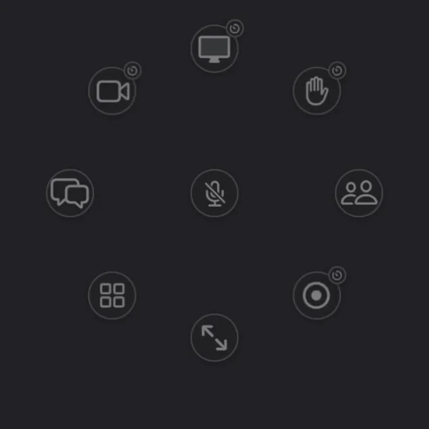
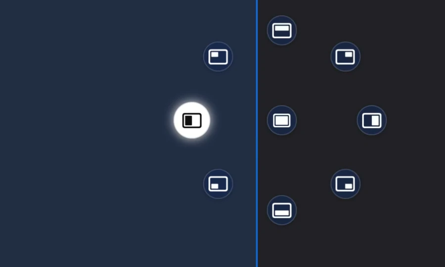

トラックパッドが、9つのボタンになる。
トラックパッドのどこかを強く押し込んで少し止めると、ポインタの周りに9つのアイコンが開く。
カードもメールアドレスも不要 ・ macOS 14 以降
Nonet は Mac 用のアプリです。Mac で nonet.astlog.dev を開くと、ダウンロードできます。
実際の画面の収録。右下の図が、トラックパッドの上の指。指を強く押し込んで止めると、ポインタの周りに9つのアイコンが開く。Xcode では「実行」、Zoom では「ミュート」で離して実行する。輪のすぐ下で止めてウインドウを画面の左半分に置き、次のページのランチャーから「メール」を開く。最後は輪の外で離して、何も実行せずに閉じる。指の動きは台本どおりに入れたもので、2回の収録をつないである。
- 機材はいらない
- 覚えなくていい
- すぐに使える
押し込んで、離すだけ
-
1強く押し込んで、止める
-

2向けて、離す
-

3輪の外で離せば、やめる
アプリが変われば、9つも変わる
-

アプリごとに、自動で替わる
-

ウインドウを、画面に置く
-
- キー入力
- メニュー
- アプリ・URL
- 画面に置く
- ショートカット
- スクリプト
- AI
- ファイル
- スクショ
- 再生・音量
- 定型文
キーも、スクリプトも、AI も
価格
14日間 無料で試せる
- 購入から30日以内なら、理由を問わず全額返金
- 1つのライセンスで、あなたが使うすべての Mac に
- バージョン 1.x のアップデートはすべて無料
お支払いは販売代理店の Paddle が行い、ライセンスキーはメールでお届けします。
よくある質問
何台の Mac で使えますか？
あなたが使うすべての Mac で使えます。家族や同僚が使うときは、1人に1つずつ必要です。
動作環境は？
macOS 14 以降と、MacBook のトラックパッドか Magic Trackpad。マウスだけでは使えません。AI のアクションだけは、macOS 26 以降で Apple Intelligence が使える Mac が必要です。
macOS のアップデートで使えなくなることは？
可能性はあります。新しい macOS はベータ版のうちから確かめて直します。直せないときは、購入からの日数にかかわらず返金します。
確認済みの macOS: 確かめた版をここに並べる
入力した内容が送られることは？
ありません。設定は Mac の中だけに保存し、アカウントもありません（プライバシーポリシー）。
ライセンスキーが見つからないときは？
購入のあとに届くメールに書いてあります。見つからないときは、注文番号を添えてお問い合わせください。
ほかのことは利用ガイドへ。